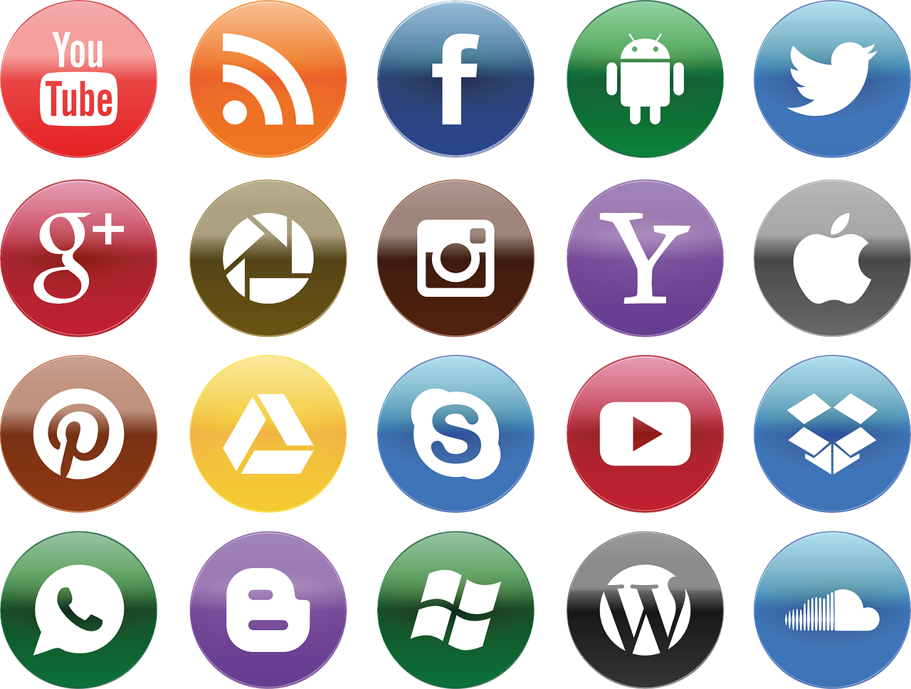

Las más populares

En la era digital contemporánea, las redes sociales han consolidado su posición como pilares fundamentales de la interconexión global, redefiniendo la forma en que las personas se comunican, comparten información y construyen comunidades en línea. Entre las plataformas más destacadas y ampliamente utilizadas en la actualidad, se encuentran:
Facebook: Fundada en 2004 por Mark Zuckerberg, Facebook sigue siendo una fuerza dominante en el panorama de las redes sociales. Con miles de millones de usuarios en todo el mundo, ofrece un espacio versátil para la conexión con amigos y familiares, así como para el descubrimiento de contenido diverso.
Instagram:
Adquirida por Facebook en 2012, Instagram se ha convertido en el epicentro de la expresión visual. Centrada en imágenes y videos cortos, esta plataforma permite a los usuarios compartir momentos de su vida de manera creativa, fomentando la exploración artística y el establecimiento de tendencias.Twitter:
Con su formato único de microblogging, Twitter ha redefinido la conversación en línea. Limitando las publicaciones a 280 caracteres, la plataforma se ha convertido en un espacio clave para noticias de última hora, discusiones globales y la expresión de opiniones en tiempo real.LinkedIn:
Diseñada específicamente para el ámbito profesional, LinkedIn conecta a profesionales de diversas industrias. Funcionando como una red de networking digital, la plataforma facilita la creación de perfiles laborales, la búsqueda de empleo y el establecimiento de conexiones comerciales.TikTok:
Surgida en 2018, TikTok ha transformado la manera en que se consume y crea contenido breve y entretenido. Con su enfoque en videos cortos, la plataforma ha atraído a una audiencia joven y ha propiciado la viralidad de tendencias y desafíos.Snapchat:
Pionera en el concepto de mensajes efímeros, Snapchat sigue siendo popular entre los usuarios jóvenes. Su característica distintiva es la capacidad de enviar fotos y videos que desaparecen después de ser vistos, fomentando una comunicación más informal y espontánea.WhatsApp:
Como una de las aplicaciones de mensajería más utilizadas del mundo, WhatsApp ofrece una forma instantánea y segura de comunicarse a través de mensajes de texto, llamadas de voz y videollamadas. Su popularidad se debe a su accesibilidad global y su enfoque en la privacidad.Estas plataformas no solo han alterado la manera en que nos conectamos, sino que también han moldeado la cultura digital contemporánea, influyendo en la forma en que compartimos experiencias, consumimos contenido y construimos relaciones en la era de la información y la interconexión.